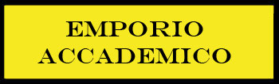
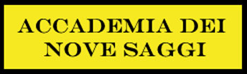
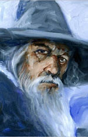
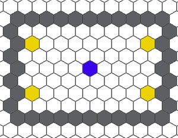

L'Accademia dei Nove Saggi è
l'unica scuola ufficiale di magia del Regno di Tarsis. Si tratta di una grande
accademia conosciuta in tutta Arelia. La posizione strategica del Regno di
Tarsis, a diretto contatto con l'ormai devastato Impero del Nordor di cui
costituisce il confine sud, ha reso questo Stato di vitale importanza per tutto
il Sud-Arelia. Divenuto il baluardo contro il caos e la distruzione, il Regno di
Tarsis ha ricevuto, infatti, privilegi e finanziamenti dagli altri Stati del
Sud-Arelia riunitisi nella Confederazione del Sud.-Arelia. Questi benefici hanno
riguardato anche l'Accademia dei Nove Saggi. La conoscenza magica è sempre stata
ritenuta di importanza vitale nella lotta contro il male ed allo stesso tempo il
controllo su tale fonte di potere è stata considerata una garanzia fondamentale.
Per tale motivo il Regno di Tarsis si è voluto dotare di un'Accademia di Magia
che, costituendo uno dei poteri dello Stato, rappresentasse uno strumento di
controllo e di potere. Questa scelta da un lato ha reso l'Accademia dei Nove
Saggi una delle più grandi e funzionali accademie di magia del Circolo del
Potere; dall'altro ha reso tale scuola di magia estremamente politicizzata e
così inserita nel contesto politico del Regno di Tarsis da lederne in gran parte
l'indipendenza. Entrare a far parte dell'Accademia dei Nove Saggi rappresenta
quindi il raggiungimento di un particolare status sociale nel Regno di
Tarsis; il popolo e le istituzioni riconoscono, infatti, i maghi accademici come
gli unici soggetti legittimati all'uso "corretto" della magia, nonché come
coloro ai quali è concesso lo studio dei segreti di questa arte arcana
nell'interesse della comunità del Regno. Si tenga presente, per esempio, che la
stessa legge del Regno impone a Sua Maestà il Re di Tarsis di scegliere il Mago
di Corte Reale fra i Saggi Maestri di questa importante accademia di magia.
L'Accademia dei Nove Saggi è stata fondata inizialmente da quattro grandi maghi venuti dal
Sud intorno al 90 a.n., costoro presero il nome di Saggi Maestri e gestirono
collegialmente la neonata scuola di magia rappresentando il vertice gerarchico
della stessa. Il potere politico locale resosi immediatamente conto delle
potenzialità offerte dall'istituzione di un'unica grande scuola di magia decise
di arginare la diffusione irregolare ed incontrollata di magia supportando il
progetto per la fondazione dell'Accademia. Questa scelta fu incentivata anche
dal potere religioso, rappresentato dall'Arcivescovato di Tanatos, il quale
premeva affinché ci fosse un controllo politico dell'insegnamento magico
all'interno del territorio del Regno. Tale inquadramento politico dell'Accademia
dei Nove Saggi se privò da un lato della completa autonomia ed indipendenza i
suoi membri, dall'altro permise all'istituto di ottenere nei fatti il monopolio
dell'insegnamento della magia all'interno del Regno di Tarsis ed ai suoi membri
di godere di privilegi politici e sociali, previsti dalla legge, paragonabili a
quelli concessi agli ecclesiastici tanatiani (si consideri, ad esempio, che i rapporti tra
l'Accademia di magia ed il Regno di Tarsis, al pari di quelli tra quest'ultimo e
l'Arcivescovato di Tanatos, furono sanciti e formalizzati attraverso la
redazione di un Accordo Bilaterale).
Il riconoscimento politico
dell'Accademia dei Nove Saggi concesse, dunque, ai suoi rappresentanti di
ottenere una posizione particolare e di spicco all'interno del Regno di Tarsis.
Costoro, infatti, lungi dall'essere considerati con sospetto e timore da parte
della popolazione acquisirono agli occhi del popolo, con l'aiuto della
"benedizione" del clero tanatiano, il ruolo storicamente riservato agli
scienziati. Si affermarono, inoltre, dinanzi alle altre istituzioni come gli
unici esperti legittimati allo studio, alla diffusione ed all'utilizzazione
delle arti magiche laiche. Ben presto, quindi, divenire un mago accademico oltre
a rappresentare il più efficiente metodo per apprendere la magia costituì un
mezzo per il raggiungimento di un elevato status sociale all'interno del
Regno di Tarsis. La prima implicazione di tale riconoscimento politico fu
rappresentata dal moltiplicarsi del numero degli iscritti nonché dal crescente
interesse da parte del potere politico ed economico nella neonata istituzione.
Come conseguenza del raggiungimento di tale importanza all'interno del Regno di
Tarsis, intorno al 20 a.n., il Consesso dei Saggi Maestri passò da quattro a
sette con l'istituzione di tre nuovi posti ai vertici accademici.
Dopo la caduta dell’Impero del Nordor, il timore di un'imminente invasione e
l'esodo di molti maghi
fuggiti dalla immane catastrofe, diede impulso per un'ulteriore crescita ed
ampliamento dell'Accademia. Utenti di magia esperti nel campo dell'alterazione
furono accolti nell'istituzione e con il consenso del Circolo del Potere fu
permesso all'Accademia dei Nove Saggi di ampliarono
il ventaglio di studi magici effettuati con l'inserimento appunto di alcune
magie di alterazione. Tale scelta precluse successivamente la nascita di una
succursale dell'Antica
Scuola di Manipolazione Magica Nordoriana nel Regno di Tarsis (tali scuole
secondarie per la diffusione dell'alterazione furono successivamente istituite
nel Territorio Libero Loderin presso Little Forest e nell'attuale Impero Scuro
presso Ravengrad). L'apertura delle porte ai maghi alteratori impose un
ulteriore ampliamento dei
posti riservati ai Saggi Maestri i quali passarono da sette a nove a seguito
dell'inserimento due potenti maghi alteratori originariamente maestri nelle loro
scuole nell’Impero. I saggi
divennero, quindi, definitivamente nove nel 28 p.n. facendo divenire l’Accademia
la scuola di magia con più Maestri del Circolo del Potere per "carica" in tutta
Arelia. Non può dubitarsi che tale scelta di ampliamento, concessa dal Circolo
del Potere anche per la posizione strategica occupata territorialmente dal Regno
di Tarsis nonché per la crisi subita a seguito del crollo dell'Impero del Nordor, ha contribuito ad accrescere
l'importanza, la potenza e la ricchezza dell'Accademia dei Nove Saggi che
rappresenta oggi una fra le più importanti scuole di magia. Tale importanza è
stata recentemente ulteriormente ampliata dopo la
distruzione dell’Accademia del Cigno d’Argento di Nembus attraverso
l'inserimento tra le file accademiche di circa una trentina di maghi di medio livello
fuggiti a Tarsis dopo quella che è stata definita la Notte del Veleno.
Per le motivazioni storiche e politiche su menzionate, entrare a far parte dell'Accademia dei Nove Saggi rappresenta un privilegio di non poca importanza, assimilabile nei fatti all'ottenimento di una seconda cittadinanza. L'Accademia dei Nove Saggi è gestita con fermezza e durezza dal Consesso dei Nove Saggi. Nonostante gli iscritti siano sostanzialmente liberi di gestire il proprio tempo costoro devono rispettare le regole ferree dell'Accademia come previste dal rigido Codice di Comportamento Accademico.
Gli iscritti sono divisi per gradi accademici all'interno dell'istituzione:
|
Grado e Titolo |
Tunica |
Costo della Retta Annua |
Pass Riconosciuto |
|
Apprendista
|
Blu senza bordo |
Retta base : 120
corone |
II grado |
|
Allievo |
Blu con bordo bianco |
Retta base : 180
corone |
III grado |
|
Studente |
Blu con bordo verde |
Retta base : 240
corone |
IV grado |
|
Esperto |
Blu con bordo rosso |
Retta base : 360
corone |
V grado |
|
Cultore |
Blu con bordo argento |
Retta base : 480
corone |
VI grado |
|
Grande Conoscitore |
Blu con bordo in oro |
Retta base : 600
corone |
VII grado |
|
Saggio Maestro |
Nessun obbligo di divisa |
Esentati dal pagamento della retta |
VIII grado |
Tutti i maghi dell’Accademia, ad eccezione dei Saggi Maestri, devono pagare una retta annua. La retta deve essere versata ogni anno all'inizio di Norio. Come stabilisce il Codice di Comportamento Accademico sottoscritto da tutti gli iscritti, i maghi che non versano interamente la retta annua saranno obbligati a prestare immediatamente e gratuitamente la loro opera all'interno dell'accademia fino a quando non avranno "pagato" alla stessa con il loro lavoro (si consideri il salario mensile dovuto loro ogni 30 giorni di lavoro) un ammontare di monete d'oro pari alla quota restante della retta da versare più l'intero importo della retta annua che avrebbero dovuto versare. Si noti che non è possibile abbandonare unilateralmente la scuola di magia ma occorre rispettare le regole previste dal Circolo del Potere, fino a che si è formalmente iscritti si ha il dovere di pagare la retta annua.
Pagando la retta annua si ha diritto ad accedere a tutti i corsi e gli insegnamenti dell’accademia, siano essi a pagamento o meno. Qualora un mago sia interessato a soggiornare all’interno dalla struttura dell’accademia dovrà pagare un contributo extra ed avrà diritto ad una sistemazione che cambia a seconda del suo titolo.
SOGGIORNARE ALL'INTERNO DELL'ACCADEMIA
Il pagamento della retta annua non comprende la possibilità di soggiornare presso la struttura accademica. Gli iscritti che desiderino soggiornare all'interno dell'istituto devono fare domanda e verificare se vi è una sistemazione per loro nell'anno in corso, qualora vi sia posto dovranno versare assieme alla retta anche il supplemento per il soggiorno. Rappresentando l'Accademia dei Nove Saggi una comunità ristretta soggiornare all'interno dell'istituto non rappresenta solo una comodità ma agevola gli iscritti ad inserirsi nell'ambiente chiuso accademico. Per rappresentare ciò i maghi che soggiornano all'interno dell'accademia ottengono un bonus di +1 (+5%) a qualsiasi tiro o prova debbano effettuare all'interno dell'ambito accademico nell'anno in corso.
Gli iscritti che si aggiudicano un alloggio all'interno dell'accademia mantengono il diritto di soggiornare nell'istituto per l'avvenire (a meno che non decidano di non rinnovare per un anno il loro soggiorno). E' anche possibile prenotare per gli anni successivi a quello in corso versando anticipatamente il costo di soggiorno, in tal caso si aggiunga un bonus del 5% al tiro percentuale per ogni anno successivo a quello in corso (fino ad una possibilità massima del 95%).
Gli iscritti all'Accademia dei Nove Saggi sono suddivisi in vari titoli accademici. Il raggiungimento di ogni nuovo titolo accademico corrisponde al raggiungimento non solo di un nuovo livello di importanza interno ma, per l'influenza politica dell'accademia, di un nuovo status sociale all'interno del Regno di Tarsis. Si noti che, per legge dello Stato, ad ogni titolo accademico corrisponde un diverso e formale grado sociale che l'iscritto riceve di diritto al raggiungimento del nuovo titolo accademico.
APPRENDISTA ACCADEMICO
Si tratta di giovani studenti che non sono ancora divenuti maghi ma che hanno deciso di seguire i corsi di base per divenire utenti di magia. Il costo dell'apprendistato è fissato a 120 corone annue, si tratta di un prezzo politico che a volte non compre le spese accademiche di insegnamento della magia. Per accedere all'ambito corso sono tenute prove di ammissione alla fine di ogni anno per coprire i 100 posti di Apprendista Accademico messi a disposizione dall'Accademia. Una volta superato il test di ammissione l'Apprendista ha diritto di frequentare i corsi fino a che non decide di desistere o diventa mago di primo livello di esperienza. I materiali che vengono usati per questi corsi sono di media qualità.
Requisiti per l’ammissione al titolo : Avere i requisiti minimi per divenire mago (Intelligenza 9) e superare la prova di ammissione.
Sistemazione Interna (se pagata) : Sono sistemati in stanze triple al 5° piano dell'Accademia. Hanno accesso alla sala mensa che si trova al 1° piano, il cibo servito loro è di media qualità. Hanno possibilità di studiare nelle sale studio comuni.
ALLIEVO ACCADEMICO
E’ il primo vero titolo che si acquisisce all'interno della scuola di magia, costoro hanno accesso ai corsi di base dell’Accademia dei Nove Saggi. In media sono iscritti all'Accademia circa 70 Allievi Accademici .
Requisiti per l’ammissione al titolo : Essere un mago di almeno il 1° livello .
Sistemazione Interna (se pagata) : Sono sistemati in piccole stanze singole al 5° piano dell'Accademia. Hanno accesso alla sala mensa che si trova al 1° piano, il cibo servito loro è di media qualità. Hanno possibilità di studiare nelle sale studio comuni. La possibilità per costoro di trovare un posto interno libero ogni anno è pari al 60%.
STUDENTE DI ARTI MAGICHE
Sono maghi che hanno deciso di approfondire lo studio della magia. Possiedono questo titolo circa 50 Studenti di Arti Magiche.
Requisiti per l’ammissione al titolo : Raggiungimento del 3° livello di esperienza come mago, ottenimento di almeno un Riconoscimento Ufficiale di Conoscenza dell’Accademia dei Nove Saggi.
Sistemazione Interna (se pagata) : Sono sistemati in stanze singole di medie dimensioni situate al 4° piano dell'Accademia. Hanno accesso alla sala mensa che si trova al 1° piano, il cibo servito loro è di media qualità. Hanno possibilità di studiare nelle sale studio comuni. La possibilità per costoro di trovare un posto interno libero ogni anno è pari al 50%.
ESPERTO DI ARTI MAGICHE
I maghi che ottengono questo titolo acquisiscono una certa importanza e rilevanza all’interno dell’Accademia e quindi del Circolo del Potere. Si tratta di maghi alquanto rispettati. Possiedono questo titolo circa 35 Esperti di Arti Magiche.
Requisiti per l’ammissione al titolo : Raggiungimento del 5° livello di esperienza come mago, ottenimento di un terzo Riconoscimento Ufficiale di Conoscenza dell’Accademia dei Nove Saggi, stesura di un volume su studi magici approfonditi concesso a titolo gratuito all'Accademia dei Nove Saggi.
Sistemazione Interna (se pagata) : Sono sistemati in accoglienti bilocali situati al 4° piano dell'Accademia. Hanno accesso alla sala mensa superiore che si trova al 2° piano, il cibo servito loro è di ottima qualità. La possibilità per costoro di trovare un posto interno libero ogni anno è pari al 40%.
CULTORE DI ARTI MAGICHE
I maghi che ottengono questo titolo hanno raggiunto ormai un livelli di esperienza e di anzianità accademica dall'essere trattati con grande rispetto sia in ambito accademico che all'esterno della scuola di magia. Possiedono questo titolo circa 25 Cultori di Arti Magiche.
Requisiti per l’ammissione al titolo : Raggiungimento del 7° livello di esperienza come mago, conseguimento di almeno un attestato di merito nella scrittura di volumi sulla magia concessi dal Circolo del Potere, ottenimento di un terzo Riconoscimento Ufficiale di Conoscenza dell’Accademia dei Nove Saggi, superamento della prima prova di magia applicata.
Sistemazione Interna (se pagata) : Sono sistemati in lussuosi bilocali situati al 3° piano dell'Accademia. Hanno accesso alla sala mensa superiore che si trova al 2° piano, il cibo servito loro è di ottima qualità. La possibilità per costoro di trovare un posto interno libero ogni anno è pari al 30%.
GRANDE CONOSCITORE DI ARTI MAGICHE
Costoro rappresentano senza dubbio i più esperti utenti di magia dell’Accademia dei Nove Saggi. Raggiungere questo titolo vuol dire divenire un mago trattato con grande reverenza ed estremo rispetto in tutto il Regno di Tarsis. Nobili, alti funzionari, facoltosi cittadini e potenti membri del clero non esitano a contattare coloro si fregiano di questo titolo per risolvere le più svariate problematiche legate all'utilizzo di arti magiche. Possiedono questo titolo circa 5 Grandi Conoscitori di Arti Magiche.
Requisiti per l’ammissione al titolo : Raggiungimento del 9° livello di esperienza come mago, conseguimento di almeno due attestati di merito nella scrittura di volumi sulla magia concessi dal Circolo del Potere, stesura di tre volumi su studi magici specifici di scuola (evocazione o alterazione) concesso a titolo gratuito all'Accademia dei Nove Saggi, superamento della seconda prova di magia applicata.
Sistemazione Interna (se pagata) : Sono sistemati in lussuosi appartamenti di tre locali situati al 2° piano dell'Accademia. Hanno accesso alla sala mensa superiore che si trova al 2° piano, il cibo servito loro è di ottima qualità. La possibilità per costoro di trovare un posto interno libero ogni anno è pari al 50%.
Anno 190 p.n.: Grandi Conoscitori dell'Accademia dei Nove Saggi di Tarsis:
Grande Conoscitore delle Arti Magiche, Ghìors : E’ un importante mago e relativamente giovane, dimostra circa 40 anni. E’ un mago dedito alle avventure ed alle esplorazioni, sono famosi i suoi ritrovamenti di manufatti magici perduti nel Nordor. Attestato il raggiungimento del 9° livello di esperienza.
Grande Conoscitore delle Arti Magiche, Glèrion Avonoc : Appartenente alla ricchissima famiglia di commercianti Avonoc è un mago che possiede una piccola flotta commerciale ed è dedito alla scrittura e vendita di pergamene magiche. Dimostra circa 50 anni. Attestato il raggiungimento del 9° livello di esperienza.
Grande Conoscitore delle Arti Magiche, Kortis Junior Sàndiras : Denominato Junior per distinguerlo dal Saggio Kortis Senior Maulon è un mago sulla quarantina completamente calvo. Specializzato nelle ricette e nella produzioni di pozioni, sono le sue la maggior parte di pozioni poi vendute dall’Accademia. Attestato il raggiungimento del 10° livello di esperienza.
Grande Conoscitore delle Arti Magiche, Miànovar Kliss : E’ un mago molto riservato, appartenente alla potente famiglia dei Kliss di Klandor dove passa la maggior parte del suo tempo (ogni mese vi è solo il 30 % delle possibilità di trovarlo presso l'Accademia) possedendo una grande torre all’interno della città. Si aggira intorno alla sessantina ed effettua studi solo personali e poco conosciuti. Attestato il raggiungimento dell'11° livello di esperienza.
Grande Conoscitore delle Arti Magiche, Prèllar Tolgas : E’ un mago sulla cinquantina assunto come Mago di Corte della cittadina di Bol dove ha una ricca dimora nel piccolo centro fortificato, accanto alla dimora del Governatore della cittadina. E’ un mago molto impegnato in politica, iscritto alla Associazione The Real Effect of Magic in the Society è ormai da tempo scelto annualmente come uno dei 100 Savi di Tarsis da parte del Consesso dei Nove Saggi. Attestato il raggiungimento del 9° livello di esperienza.
Grande Conoscitore delle Arti Magiche, Sindor della Famiglia Ducale dei Vadrion : Appartenente alla famiglia del Duca della Torre Nera come il cugino, il Saggio Kraan Argentio, è un mago molto austero e severo che ha il ruolo di Vice-Capo degli Ispettori del Magico a Tarsis. Si occupa per delega, quasi totale, dei controlli sul magico che sono effettuati nel Ducato della Torre Nera e nelle zone a Sud del Regno di Tarsis. Attestato il raggiungimento del 12° livello di esperienza.
SAGGIO MAESTRO DELL'ACCADEMIA
Costituiscono il vertice
dell'Accademia dei Nove Saggi e rappresentano l'istituzione vivente essendo
considerati i più influenti utenti di magia del Regno di Tarsis. Formano il
Consesso dei Nove Saggi, organo collegiale le cui decisioni dettano le regole di
vita accademica. Costoro hanno il dovere di dirigere l'Accademia dei Nove Saggi.
Il Consesso, infatti, attribuisce con decisione presa a maggioranza ai vari
Saggi Maestri ruoli direttivi specifici all'interno dell'Accademia delegando
loro singolarmente la direzione di singoli settori di interesse. Solitamente una
volta che un Saggio Maestro ottiene la gestione di un settore di interesse,
acquisendo la relativa sfera di potere, la mantiene per lungo tempo (a volte a
vita) fino a che per suo interesse o per gravi ragioni di opportunità il
Consesso non decida di revocargli la delega. In ogni caso il Saggio Maestro
svolge il suo compito di direzione nel rispetto delle direttive del Consesso dei
Nove Saggi.
In realtà non sussiste una grande differenza di
esperienza tra i Saggi Maestri ed i Grandi Conoscitori,
anzi vi sono alcuni Grandi Conoscitori che hanno raggiunto livelli di esperienza
superiori a quelli di alcuni Saggi Maestri. La vera differenza tra i due titoli
accademici risponde a logiche di potere politico ed economico. Solo i Grandi
Conoscitori più influenti sono scelti dal Consesso dei Nove Saggi, per
cooptazione, all'interno dello stesso.
I Saggi Maestri sono riconosciuti di diritto Maestri di Magia del Circolo del Potere. Costoro non pagano alcuna retta annua ed hanno diritto ad accedere gratuitamente a tutti i servizi offerti dall’Accademia (ad eccezione di quelli che prevedono il lavoro di altri utenti di magia per i quali devono regolarmente pagare). Inoltre, distribuiscono tra loro annualmente come guadagno personale il 25% degli utili netti annuali prodotti dall'Accademia dei Nove Saggi.
Il titolo di Saggio Maestro si mantiene praticamente a vita nonostante esista una regola interna in base alla quale, con decisione presa all'unanimità, otto Saggi Maestri possono rimuovere dal titolo un Saggio Maestro il quale acquisirà nuovamente il titolo di Grande Conoscitore (storicamente tale regola non è mai stata utilizzata).
Requisiti per l’ammissione al titolo : Raggiungimento del titolo di Grande Conoscitore. Esistono solo nove posti di Saggio Maestro all'interno dell'Accademia, per tale motivo quando uno di questi posti si libera i restanti Saggi Maestri elevano a maggioranza, per cooptazione, un nuovo Grande Conoscitore al rango di Saggio Maestro.
Sistemazione Interna : Teoricamente il Consesso dei Nove Saggi può assegnare qualsiasi zona od edificio dell'Accademia ai suoi membri. In pratica, la scelta operata dal Consesso (attualmente vigente) è stata quella di riservare interamente l'ultimo piano del palazzo dell'Accademia (6° piano) ai nove Saggi Maestri. Solo a costoro ed al personale autorizzato è permesso, infatti, l'accesso a tale livello dell'Accademia.

Anno 190 p.n.: Saggi Maestri dell'Accademia dei Nove Saggi di Tarsis:
Saggio Maestro Vorenia “l’anziano”: E’ il più anziano tra tutti i Saggi avendo circa 70 anni. E’ il Rappresentante al Circle of Power dell’Accademia dei Nove Saggi ed è una vera autorità nel Circolo dove è conosciuto e rispettato da tutti. Si tratta di un mago a volte severo specie con i giovani ma in fondo disponibile e buono. Costui, per decisione comune, preside le riunioni del Consesso dei Nove Saggi ed è attribuito l'incarico di gestire l'apprendistato accademico. Attestato il raggiungimento dell'11° livello di esperienza.
Saggio Maestro Ilvonor “lo scienziato”: Discendente diretto del grande maestro Ilvonor della scuola di magia La Vela Incantata situata a Vaneliam nell'Impero del Nordor, Ilvonor è uno dei due rappresentanti della scuola di alterazione presso l'Accademia dei Nove Saggi. Responsabile della sede dell'Accademia presso Klandor con i suoi grandi laboratori è un vero ricercatore del magico specializzato nella costruzione di oggetti magici. Gestisce gestisce la ricerca e la costruzione di oggetti magici ed il loro acquisto da parte dell'Accademia dei Nove Saggi. E', inoltre, il responsabile dei servizi di trasporto magico dell'Accademia. Relativamente giovane, dimostra 50 anni, è già un nome importante fra i ricercatori del magico ad Arelia. Trascorre la maggior parte del suo tempo presso la sede di Klandor (ogni mese vi è solo il 25 % delle possibilità di trovarlo presso l'Accademia). Attestato il raggiungimento dell'12° livello di esperienza.
Saggio Maestro Kìllar della Famiglia Reale dei Reindor: Potentissimo politicamente, Killar non ha proseguito molto negli studi magici dopo essere divenuto Grande Conoscitore e poi scelto come Saggio. Zio del nuovo Re di Tarsis è il Mago di Corte Reale del Regno, quindi membro di Corte Maggiore del Regno di Tarsis, nonché Capo dell’Ispettorato del Magico. E’ un mago molto ricco e possiede proprietà in tutto il Sud-Arelia. Attestato il raggiungimento dell'9° livello di esperienza.
Saggio Maestro Kortis Senior Maulon: Anziano Saggio ormai vicino alla settantina, originario di Klandor, ormai vive a Tarsis all’interno dell’Accademia. Non estremamente esperto come mago è uno studioso di rilievo mondiale nei campi della storia, della geografia e delle lingue antiche. Si occupa della gestione di tutti i corsi non magici dell’Accademia nonché delle librerie non attenenti al magico. Attestato il raggiungimento dell'9° livello di esperienza.
Saggio Maestro Kraan Argentio della Famiglia Ducale dei Vadrion: Ormai vicino alla sessantina, è il fratello maggiore del Duca della Torre Nera. Nonostante fosse il primogenito decise di lasciare il posto di nobile territoriale al fratello minore per dedicarsi alla carriera magica, anche in ragione del fatto che la tradizione locale impone che il Duca sia un valoroso guerriero. E’ stato, però, ampiamente ricompensato della scelta effettuata, ottenuta in nozze la sorella del Re di Tarsis, Antea Reindor, è divenuto ricchissimo ed estremanente influente rappresentando il secondo mago più vicino al Re di Tarsis dopo Kìllar. Nominato, sine die, Mago di Corte Ducale dei Vadrion ha grandi poteri sulla circolazione del magico nel Ducato della Torre Nera e riceve un altissimo salario dal fratello minore. Specializzatosi nello studio della magia teorica gestisce tutte le librerie magiche dell'accademia e valuta gli scritti sul magico presentati da tutti gli iscritti. Trascorre la maggior parte del suo tempo presso la sede dell'Accademia di Klandor (ogni mese vi è solo il 35 % delle possibilità di trovarlo presso l'Accademia). Attestato il raggiungimento dell'10° livello di esperienza.
Saggio Maestro Synopsis della famiglia del Conte dei Treemon “Gold Power”: Cugino del Conte delle Tre Lune è un mago sulla sessantina, fra i più esperti del Regno di Tarsis . Ha dedicato la sua vita allo studio delle arti magiche e delle ricerche di incantesimi. Famoso per la sua tenacia e la sua integrità morale nonché per la sua fede religiosa in Tanatos, gestisce tutti gli studi e le ricerche sul magico dell’Accademia dei Nove Saggi. E' stato scelto, inoltre, con l’influenza dell’Arcivescovo di Tarsis come Mago di Corte della cittadella fortificata di Abrod dove gli è stata concessa un'antica dimora nel centro fortificato adiacente al Duomo di Tanatos (sotto l’influenza del focus protettivo). Trascorre la maggior parte del suo tempo presso Abrod (ogni mese vi è solo il 40 % delle possibilità di trovarlo presso l'Accademia). Attestato il raggiungimento del 12° livello di esperienza.
Saggio Maestro Traigor Lorgarn “l’Astrologo”: Ormai sessantenne è divenuto famoso anche per la sua relazione interraziale con una donna elfica da cui ha avuto anche due figli, uno dei quali Trendor Eluin Lorgarn Ispettore del Magico e Conoscitore di Arti Magiche. E' l'Ambasciatore dell'Accademia dei Nove Saggi, si occupa delle relazioni con le altre scuole di magia e riveste il ruolo di rappresentante presso il Circolo del Potere dell'Accademia.Gestisce l'accesso di maghi esterni alle strutture accademiche fornendo il parere di gradimento e concede l'autorizzazione ai maghi interni per lo studio in altre scuole di magia. E' un grande studioso di astrologia e dei piani dimensionali dei quali insegnamenti possiede le cattedre accademiche. Sono famosi i suoi studi sui diversi piani dimensionali. Attestato il raggiungimento del 11° livello di esperienza.
Saggio Maestro Typor “Dark Magic”: Saggio riservatissimo, passa molto tempo a Klandor nei laboratori dell’Accademia, è molto difficile da incontrare a Tarsis e non si conoscono molte notizie su di lui. Sono famose alcune sue pubblicazioni su argomenti magici generali e si dice abbia ricevuto oltre venti riconoscimenti ufficiali di merito per scritti magici. Molti suoi testi sono impiegati nell’Accademia per formare i nuovi maghi durante i primi corsi. Attestato il raggiungimento del 10° livello di esperienza.
Saggio Maestro Yagorn “Il Gufo”: Mago cinquantenne, è un economista e commerciante di primo rilievo, esperto della scuola di alterazione è un discendente diretto di Yagorn "Il Venerabile" Primo Maestro della scuola di magia "Il Glifo Arcano" di Klinan. Nonostante non si molto esperto come mago gestisce in qualità di Governatore Generale la Banca dei Maghi di Tarsis. Gestisce, inoltre, la cassa dell’Accademia occupandosi dell’investimento dei fondi della stessa in molteplici attività lucrative.
Per essere promossi al grado di Cultore di Arti Magiche i maghi accademici
devono superare la prima prova di magia applicata che consiste in una prova di
utilizzo delle arti magiche in combattimento. Durante il mese di Norio di
ogni anno coloro che desiderano provare a superare la prova devono iscriversi
alla stessa versando un contributo di 500 corone all'Accademia dei Nove
Saggi. Coloro che si sono iscritti effettueranno la prova pubblicamente nel mese
il primo giorno del mese di Artato presso l'Arena della Magia. Si tratta di un
evento di rilievo per l'Accademia e, solitamente, quasi tutti gli iscritti
partecipano fra il pubblico. La prova consiste in uno scontro "reale" tra il
mago ed alcune creature costruite create nei laboratori accademici. Il mago deve
utilizzare esclusivamente la propria magia per abbattere gli automi e deve
rispettare le seguenti regole:
* Non si può entrare
nell'arena con oggetti magici di qualsiasi tipo.
* Non possono essere usate armi di alcun tipo.
* Il mago può indossare solo la tunica accademica e portare con se i componenti
per i propri incantesimi non deve trovarsi inoltre sotto effetto di prodotti
alchemici ed erboristici.
* Non possono essere attivi sul mago, prima dell'inizio dello scontro, effetti
magici di qualsiasi tipo.
Gli automi possono essere fermati alla fine di ogni round di combattimento dai
Saggi Maestri presenti, ciò avviene automaticamente in caso di violazione delle
regole, in caso di abbattimento del mago
(in questo caso un chierico di Loky sempre
presente alla prova interverrà trascorsi 1d2 round curando il mago magicamente
per farlo uscire dallo stato di coma a spese dell'Accademia)
ed in caso in cui il mago alla fine del round dichiari di arrendersi. In
tutti questi casi il mago avrà perso la prova e dovrà effettuarla nuovamente
l'anno successivo.
Il mago si posizionerà nella pedana al centro dell'arena (esagono blu nella
mappa) mentre i quattro automi saranno posizionati a caso nelle quattro pedane
laterali (esagoni gialli nella mappa). Ogni esagono misura 3 metri di diametro.
Gli automi (che hanno le immunità solite dei costruiti risultando immuni ai
veleni, alle magie mentali alla paralisi ed ai colpi critici) non possono
effettuare alcuna manovra di carica durante l'intero combattimento.

Ogni mago accademico si impegna a rispettare le seguenti regole. Qualora queste regole non saranno rispettate, i colpevoli saranno soggetti a sanzioni disciplinari interne decretate a maggioranza dai 9 Saggi.
Le sanzioni disciplinari dovranno essere scelte fra queste prestabilite :
Sanzioni lievi, per leggere infrazioni e comunque per al massimo le prime tre sanzioni disciplinari.
- Interdizione a tutti i servizi offerti dall’Accademia a tempo determinato, da 1 a 6 mesi.
- Reclusione nelle sale dell’Accademia per un periodo determinato, da 1 a 3 mesi con obbligo di lavoro gratuito nei laboratori accademici.
- Retrocessione di un grado accademico a tempo determinato da 1 a 2 anni
Sanzioni gravi, per gravi inadempienze o comunque se si tratta della quarta sanzione od una successiva.
- Espulsione dalla scuola a tempo determinato da 6 mesi a 2 anni con notifica al Circle of Power
- Espulsione
definitiva della scuola con successiva notifica di rinnegamento al Circle of
Power
(questa sanzione è
obbligatoriamente presa nei confronti di coloro rifiutano di sottostare a una
qualsiasi altra sanzione assegnatagli).
Regole di Comportamento
Ogni mago accademico deve all’interno del Regno di Tarsis ed ogni volta che si presenti presso un’altra accademia riconosciuta dal Circle of Power, od un suo membro, deve mostrare la divisa assegnatagli dal suo titolo.
Non è consentito per nessun motivo ed in nessuna circostanza ed in nessun luogo indossare tuniche e divise di un altro grado, di una altra scuola o spacciarsi per un altro diverso mago.
Ogni mago deve tenere la propria divisa in ottimo stato di pulizia e cambiaral immediatamente quando necessario. La divisa dovrà essere originale ed acquistata presso l’Accademia e non può essere manomessa in alcun modo.
Ogni Accademico deve mostrare reverenza nei confronti di un grado a lui superiore, non deve in alcun modo diretto od indiretto recagli offesa.
Ogni Accademico ha l’obbligo di riferire per iscritto a uno dei 9 Saggi ogni comportamento di altro Accademico reputi strano o scorretto di cui venga a conoscenza in qualsiasi modo.
Ogni Accademico deve rispettare le decisioni e i compiti affidategli dai qualsiasi dei 9 Saggi, chi non rispetterà gli ordini impartiti da un Saggio verrà punito. I compiti devono essere adempiuti con la massima disciplina cercando di raggiungere lo scopo richiesto ed evitando mere esecuzioni alla lettera che nella sostanza lascino il compito come non eseguito od eseguito male. Ogni Accademico potrà fare ricorso al collegio dei 9 Saggi qualora reputi un incarico od un ordine ingiusto, troppo complesso o troppo oneroso. Se la decisione del collegio sarà a loro sfavore colui che ha effettuato il ricorso sarà punito per aver offeso un superiore di grado.
E’ severamente proibito l’utilizzo della magia per qualsiasi ragione ed in ogni luogo contro un membro dell’Accademia senza espresso permesso di un Saggio. Sono esentati da tale divieto i membri che siano Ispettori del Magico ed utilizzino la magia nell'esercizio delle loro funzioni.
E’ proibito in ogni modo fare concorrenza all’Accademia nei servizi da questa offerti, in forma diretta e indiretta.
E’ proibito divulgare le informazioni riservate dell’Accademia alle quali si ha accesso, anche fra gli stessi maghi accademici. Sarà possibile riferire tali informazioni unicamente ai Saggi Maestri.
Ogni Accademico che sia venuto a conoscenza di informazioni che possano a suo giudizio interessare l’Accademia avrà il dovere di riferirle ad un Saggio Maestro al più presto ed in tempo ancora utile. Si presume che ogni notizia sul magico (oggetti , magie , ecc…) o su un membro dell’Accademia sia interessante per l’Accademia.
Ogni Accademico deve mantenere nella società un comportamento dignitoso e onorevole, inoltre, costui ha il compito di evitare di far ricadere infamia sull’Accademia a causa delle sue azioni.